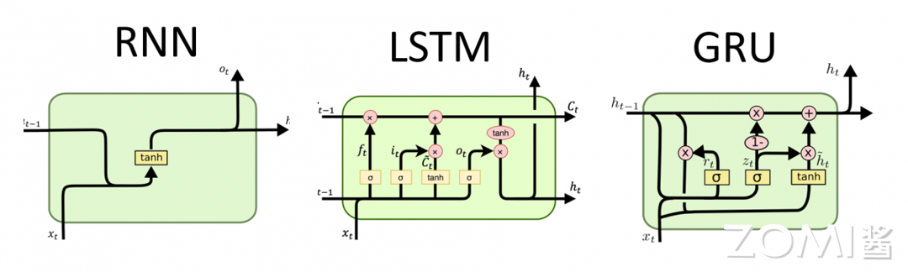

循环神经网络#
3.1 循环神经网络的基本概念#
循环神经网络（Recurrent Neural Network, RNN）是一种用于处理序列数据的神经网络结构。与前馈神经网络不同，RNN具有循环连接，允许信息在网络内部传递，从而能够捕捉序列数据中的时序信息和长期依赖关系。
3.1.1 RNN的核心思想#
RNN的核心思想是引入”记忆”机制，使网络能够记住之前处理过的信息。在处理序列数据时，每个时间步的输出不仅取决于当前输入，还取决于之前的隐藏状态。这种设计使RNN特别适合处理时间序列数据、文本、语音等具有时序依赖的数据。
基本的RNN结构包括一个或多个时间步（time step），每个时间步都有一个输入和一个隐藏状态（hidden state）。隐藏状态在每个时间步都会被更新，同时也会被传递到下一个时间步。这种结构使得RNN可以对序列中的每个元素进行处理，并且在处理后保留之前的信息。
3.1.2 RNN的网络结构#
RNN的基本结构可以用以下公式描述：
隐藏状态更新： $\(h_t = \sigma(W_{xh} \cdot x_t + W_{hh} \cdot h_{t-1} + b_h)\)$
输出计算： $\(y_t = W_{hy} \cdot h_t + b_y\)$
其中：
\(x_t\)是时间步\(t\)的输入
\(h_t\)是时间步\(t\)的隐藏状态
\(y_t\)是时间步\(t\)的输出
\(W_{xh}, W_{hh}, W_{hy}\)是权重矩阵
\(b_h, b_y\)是偏置向量
\(\sigma\)是激活函数（通常为tanh或ReLU）

3.1.3 时间步展开#
RNN的”循环”特性可以通过时间步展开（Unfolding）来理解。在展开图中，每个时间步都有一个独立的网络副本，但它们共享相同的权重参数。这种表示清楚地展示了信息如何沿时间轴传递。
3.2 RNN的训练与挑战#
3.2.1 通过时间的反向传播#
训练RNN使用一种称为”通过时间的反向传播”（Backpropagation Through Time, BPTT）的算法。BPTT是反向传播算法在时间维度的扩展，其基本思想是：
将RNN按时间步展开，得到一个深层前馈网络
计算每个时间步的损失
从最后一个时间步开始，反向传播梯度
梯度沿时间轴反向传递，累积到每个时间步
BPTT的数学表达：
其中\(L\)是总损失，\(L_t\)是时间步\(t\)的损失。
3.2.2 梯度消失与梯度爆炸#
传统的RNN存在严重的梯度消失（Vanishing Gradient）和梯度爆炸（Exploding Gradient）问题。
梯度消失：当梯度沿时间轴反向传播时，梯度值会逐时间步衰减，导致网络难以学习长期依赖。
梯度爆炸：梯度值可能会随时间步指数增长，导致网络不稳定。
这些问题使得基本的RNN难以捕捉长距离依赖关系。例如，在处理长文本时，较早的输入信息难以影响后续的输出。
3.2.3 长距离依赖的挑战#
长距离依赖是指序列中相距较远的元素之间的语义关联。例如，在句子”The cat, which already ate … , was full.”中，”cat”和”was”之间可能相隔很多词，但它们之间存在主谓关系。
基本的RNN无法有效地学习这种长距离依赖，因为：
信息的传递需要经过多个时间步
每一步的信息传递都可能损失一部分
梯度在反向传播时会指数衰减
3.3 长短期记忆网络（LSTM）#
为了解决RNN的梯度消失问题，Hochreiter和Schmidhuber于1997年提出了长短期记忆网络（Long Short-Term Memory, LSTM）。
3.3.1 LSTM的核心思想#
LSTM通过引入门控机制（Gating Mechanism）来控制信息的流动，从而解决长期依赖问题。LSTM的核心是细胞状态（Cell State），它像一条传送带，允许信息在整个序列处理过程中保持传递。
3.3.2 LSTM的门控机制#
LSTM包含三个门控：
遗忘门（Forget Gate）：决定从细胞状态中丢弃什么信息 $\(f_t = \sigma(W_f \cdot [h_{t-1}, x_t] + b_f)\)$
输入门（Input Gate）：决定将什么新信息存储到细胞状态中 $\(i_t = \sigma(W_i \cdot [h_{t-1}, x_t] + b_i)\)\( \)\(\tilde{C}_t = \tanh(W_C \cdot [h_{t-1}, x_t] + b_C)\)$
输出门（Output Gate）：决定输出什么信息 $\(o_t = \sigma(W_o \cdot [h_{t-1}, x_t] + b_o)\)$
3.3.3 LSTM的细胞状态更新#
细胞状态的更新公式： $\(C_t = f_t \odot C_{t-1} + i_t \odot \tilde{C}_t\)$
隐藏状态的更新公式： $\(h_t = o_t \odot \tanh(C_t)\)$
其中\(\odot\)表示逐元素乘法。
3.3.4 LSTM解决长期依赖的原理#
LSTM通过门控机制解决了梯度消失问题：
遗忘门：允许网络选择性地忘记旧信息
输入门：允许网络选择性地添加新信息
细胞状态：提供了一条直接的信息传递路径，梯度可以沿着这条路径流动而不会被衰减
这种设计使LSTM能够有效地学习和传递长期依赖信息。
3.4 门控循环单元（GRU）#
门控循环单元（Gated Recurrent Unit, GRU）是由Cho等人于2014年提出的一种简化版LSTM。GRU合并了输入门和遗忘门为更新门，结构更简洁。
3.4.1 GRU的结构#
更新门： $\(z_t = \sigma(W_z \cdot [h_{t-1}, x_t] + b_z)\)$
重置门： $\(r_t = \sigma(W_r \cdot [h_{t-1}, x_t] + b_r)\)$
候选隐藏状态： $\(\tilde{h}_t = \tanh(W_h \cdot [r_t \odot h_{t-1}, x_t] + b_h)\)$
隐藏状态更新： $\(h_t = (1 - z_t) \odot h_{t-1} + z_t \odot \tilde{h}_t\)$
3.4.2 GRU vs LSTM#
特性 |
LSTM |
GRU |
|---|---|---|
门数量 |
3个（遗忘、输入、输出） |
2个（更新、重置） |
参数量 |
较多 |
较少 |
细胞状态 |
有 |
无 |
计算复杂度 |
较高 |
较低 |
记忆能力 |
较强 |
相对较弱 |
在实际应用中，GRU在某些任务上表现与LSTM相当，但训练速度更快，参数更少。
3.5 双向循环网络#
3.5.1 双向RNN的原理#
双向循环网络（Bidirectional RNN, Bi-RNN）由Schuster和Paliwal于1997年提出，用于处理需要同时考虑前后文的任务。
Bi-RNN包含两个独立的RNN：
前向RNN：从序列开头向结尾处理
后向RNN：从序列结尾向开头处理
两个方向的输出在每个时间步被组合： $\(y_t = \overrightarrow{h_t} \oplus \overleftarrow{h_t}\)$
3.5.2 双向网络的应用场景#
双向网络适用于：
自然语言处理：如命名实体识别，需要同时考虑词语的前后文
语音识别：需要考虑语音帧的前后上下文
序列标注：如词性标注、情感分析
3.6 序列到序列模型#
3.6.1 Encoder-Decoder架构#
序列到序列（Sequence-to-Sequence, Seq2Seq）模型用于将一个序列转换为另一个序列，如机器翻译、文本摘要等任务。
基本的Seq2Seq模型包含：
Encoder（编码器）：将输入序列编码为固定大小的上下文向量
Decoder（解码器）：根据上下文向量生成输出序列
3.6.2 上下文向量的问题#
基本的Seq2Seq模型存在信息瓶颈问题：
上下文向量必须将整个输入序列的信息压缩到固定长度的向量中
对于长输入序列，信息损失严重
模型难以处理长距离依赖
3.6.3 注意力机制的引入#
注意力机制（Attention Mechanism）解决了上下文向量的问题：
** Bahdanau Attention**：允许解码器在生成每个输出时”关注”输入序列的不同部分
自注意力（Self-Attention）：允许序列内部元素之间直接交互
注意力机制的核心思想是： $\(Attention(Q, K, V) = softmax(\frac{QK^T}{\sqrt{d_k}})V\)$
这为后来Transformer架构的提出奠定了基础。
3.7 RNN的计算特性与AI芯片设计#
3.7.1 RNN的计算特点#
RNN的计算具有以下特点：
时序依赖性：RNN的计算必须按时间步顺序进行，难以并行化
长短期记忆：LSTM/GRU通过门控机制实现长期记忆
变长序列：RNN可以处理不同长度的序列
权重共享：沿时间轴共享参数，减少参数量
3.7.2 RNN对AI芯片的挑战#
并行化限制：时序依赖性限制了计算的并行度
内存带宽：RNN需要频繁读写隐藏状态
变长序列处理：需要动态的内存管理
门控机制：LSTM的门控操作增加了计算复杂度
3.7.3 AI芯片对RNN的支持#
AI芯片设计需要考虑RNN的特殊需求：
时序控制单元：支持RNN的时间步控制
高效的MAC运算：支持LSTM/GRU的门控计算
灵活的内存管理：支持变长序列处理
状态缓存：支持隐藏状态的快速读写
3.8 RNN的变体与扩展#
3.8.1 深度循环网络#
将多个RNN层堆叠形成深度循环网络（Deep RNN），增加模型的表达能力：
每层接收上一层的隐藏状态作为输入
深层结构能学习更复杂的表示
训练难度随层数增加
3.8.2 注意力增强的循环网络#
将注意力机制与RNN结合：
在每个时间步，decoder关注encoder的不同隐藏状态
解决了Seq2Seq的信息瓶颈问题
广泛应用于机器翻译
3.8.3 语音识别中的RNN#
RNN在语音识别领域有广泛应用：
Deep Speech：百度开发的端到端语音识别系统
LAS（Listen, Attend and Spell）：Google的语音识别模型
CTC（Connectionist Temporal Classification）：处理输入输出长度不对齐的问题
3.9 RNN的实际应用#
3.9.1 自然语言处理#
RNN及其变体在NLP领域有广泛应用：
语言模型：预测下一个词的概率
机器翻译：将一种语言翻译为另一种语言
文本生成：生成连贯的文本
情感分析：判断文本的情感倾向
3.9.2 时间序列预测#
RNN适合处理时间序列数据：
股票价格预测：预测金融市场的走势
天气预报：预测气象数据
能源消耗预测：预测电力需求
3.9.3 视频处理#
RNN可用于视频分析：
视频描述：生成视频内容的文本描述
动作识别：识别视频中的动作类别
视频预测：预测视频的未来帧
本章小结#
本章系统介绍了循环神经网络的理论与实践：
RNN基本原理：通过循环连接引入记忆机制，能够处理序列数据，但存在梯度消失/爆炸问题。
LSTM网络：通过门控机制（遗忘门、输入门、输出门）解决长期依赖问题，是目前应用最广泛的循环网络之一。
GRU网络：简化版的LSTM，合并了门控数量，训练更快，参数更少。
双向RNN：同时考虑序列的前后上下文，适用于NLP等任务。
Seq2Seq模型：Encoder-Decoder架构，是机器翻译等任务的基础，引出了注意力机制。
计算特性：RNN的时序依赖性对AI芯片设计提出特殊挑战，需要有效的并行化和内存管理策略。
应用领域：RNN广泛应用于NLP、时间序列预测、语音识别等领域。
思考与练习#
RNN梯度分析：对于基本RNN，分析为什么梯度消失问题在处理长序列时尤为严重。假设隐藏状态更新为\(h_t = \tanh(W_{hh}h_{t-1} + W_{xh}x_t)\)，推导梯度\(\frac{\partial h_t}{\partial h_{t-1}}\)的范数。
LSTM门控设计：解释为什么LSTM的遗忘门和输入门使用Sigmoid函数而不是Tanh函数？这种设计有什么优势？
GRU简化：说明GRU如何将LSTM的三个门简化为两个门。这种简化对模型的记忆能力有什么影响？
注意力机制：比较Seq2Seq模型中不使用注意力机制和使用注意力机制的区别。为什么注意力机制能解决长序列问题？
AI芯片设计：讨论AI芯片应该如何设计以高效支持RNN类网络的推理计算。对于时序依赖性带来的并行化限制，有什么可能的解决方案？